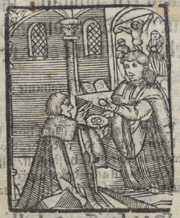
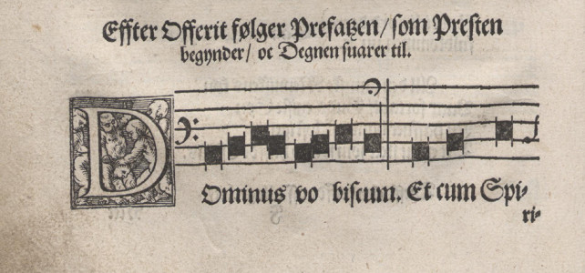
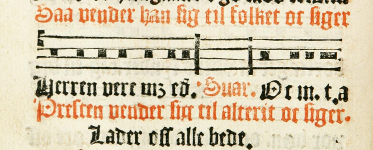

af
Portalen Danske reformationssalmer rummer liturgiske håndbøger med tekster og melodier til gudstjenester kirkeåret igennem. De følgende oversigter giver et overblik over de sange, som knytter sig til nadveren, og de korsvar og messetoner, som forekommer spredt i portalens korpus.

Nadveren afbilledet i Peder Palladius' Enchiridion (København 1538, fol. J 1r).
De ni ældste danske salme- og messebøger, som portalen Danske reformationssalmer giver adgang til, indeholder andet end salmer i streng forstand. Her er også melodier til liturgiske sange og korsvar, der ikke kan betragtes som salmer. Grænsen er dog flydende, idet liturgiske sange såsom "Kyrie" eller "Sanctus", der er strengt knyttet til liturgien, samtidigt optræder som afrundede melodier, i nogle tilfælde tilmed som strofiske salmer beregnet til fællessang. I modsætning hertil står de liturgiske sange, der med sungne replikker skiftevis af præst og degn/kor/menighed er så tæt knyttet til gudstjenestens forløb, at de i kilderne optræder uden klar tekstlig eller melodisk afgrænsning. For at undgå gentagelser, er "replikkerne" ikke altid skrevet ud i fuld længde i kilderne, og tilmed kan de være helt udeladt med henvisning til beskrivelser i Kirkeordinansen eller andre samtidige kilder. I de digitale udgaver kan sådanne melodier derfor fremstå fragmentariske.
Formålet med nedenstående oversigter er at skabe et overblik over sådanne liturgiske sange på tværs af de ni udgivelser, som portalen rummer. Oversigterne viser sange til nadveren, korsvar og messetoner, der ud fra liturgiske synspunkter måtte være relateret til hinanden.

Indledningen til nadveren juledag, sådan som Jespersen gengiver den i sit graduale (s. 62).
Indledningen til nadveren består af vekselsang mellem præst og degn/kor/menighed efterfulgt af en præfation, en indledning, der kan skifte i løbet af kirkeåret. Vormordsens Håndbog om den rette evangeliske Messe (Malmø 1539) og Jespersens Graduale. En Almindelig Sangbog (København 1573) indeholder nedenstående melodier. Melodier til fem præfationer er desuden trykt i den udgave af Peder Palladius' alterbog, som udkom med titlen Søndages oc hellige dages Episteler oc Euangelia met Collecter (København: Lorentz Benedict, 1564).
Håndbog om den rette evangeliske Messe (Malmø 1539)
Præfation til almindelige helligdag, (inkl. indledende salutation og "Opløffter eders hierter" m.m.), fol. E 3v
Præfation til Juledag, fol. O 2v
Præfation til Langfredag, fol. O 3v
Præfation til Påskedag, fol. O 4v
Præfation til Kristi Himmelfart, fol. P 1v
Præfation til Pinsedag, fol. P 2r
Præfation til treenigheden, fol. P 2v
Præfation til Jomfru Maria, fol. P 4r
Graduale. En Almindelig Sangbog (København 1573)
Præfation til Juledag (inkl. indledende salutation og "Sursum corda" m.m.), s. 62
Præfation til Påskedag, s. 208
Præfation til Pinsedag, s. 265
Præfation til Anden Pinsedag, s. 282
Umiddelbart inden uddelingen af brødet og vinen synges Fader Vor og indstiftelsesordene, der er Jesu ord ved nadveren gengivet fire steder i Det nye Testamente. Melodierne findes i de to messebøger En håndbog som indeholder det hellige Evangeliske Messeembede (Malmø 1535) og Håndbog om den rette evangeliske Messe (Malmø 1539). De udkom begge før Den rette ordinans (København 1542), kaldet kirkeordinansen, hvori sangene også findes. I Jespersens Graduale. En Almindelig Sangbog (København 1573) henvises der blot til kirkeordinansens melodier. Sangene findes desuden i Peder Palladius' alterbog, der udkom første gang med titlen Søndagers Oc hellige dagers Episteler oc Euangelia met Collecter (Magdeburg: Hans Walter, 1556).
En håndbog som indeholder det hellige Evangeliske Messeembede (Malmø 1535)
Fader vor, du som er i himmelen, fol. A 4v
Vor Herre Jesus Kristus i den nat, fol. B 1r
Lige måde tog han og kalken efter aftens måltid, fol. B 1r
Håndbog om den rette evangeliske Messe (Malmø 1539)
Fader vor, du som er i himlene, fol. F 4r
Vor herre Jesus Kristus i den nat, fol. F 4v
Lige måde tog han og kalken efter aftens måltid, fol. G 1v

På denne måde noterer Vormordsen salutationen før kollekten (fol. B 4v).
De korsvar, som indgår i messen i forbindelse med tekstlæsninger, gengives her:
Håndbog om den rette evangeliske Messe (Malmø 1539)
Salutation før kollekt, fol. B 4v
Indledning til epistel, fol. C 1v
Salutation og indledning til evangelium, fol. C 4v
Salutation til indledningen af nadveren, fol. E 3v
Den danske psalmebog (København 1569)
Salutation, kollekt, epistel og messetoner til recitation af teksten, fol. Aaa 3v
Salutation, evangelium og messetoner til recitation af teksten, fol. Aaa 4v
Graduale. En Almindelig Sangbog (København 1573)
Salutation til indledningen af nadveren, s. 62